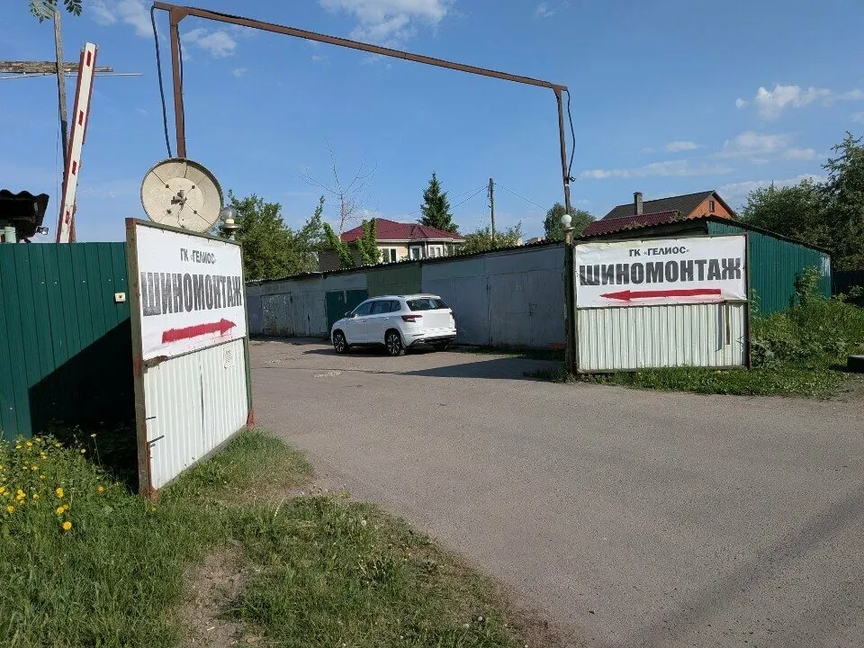
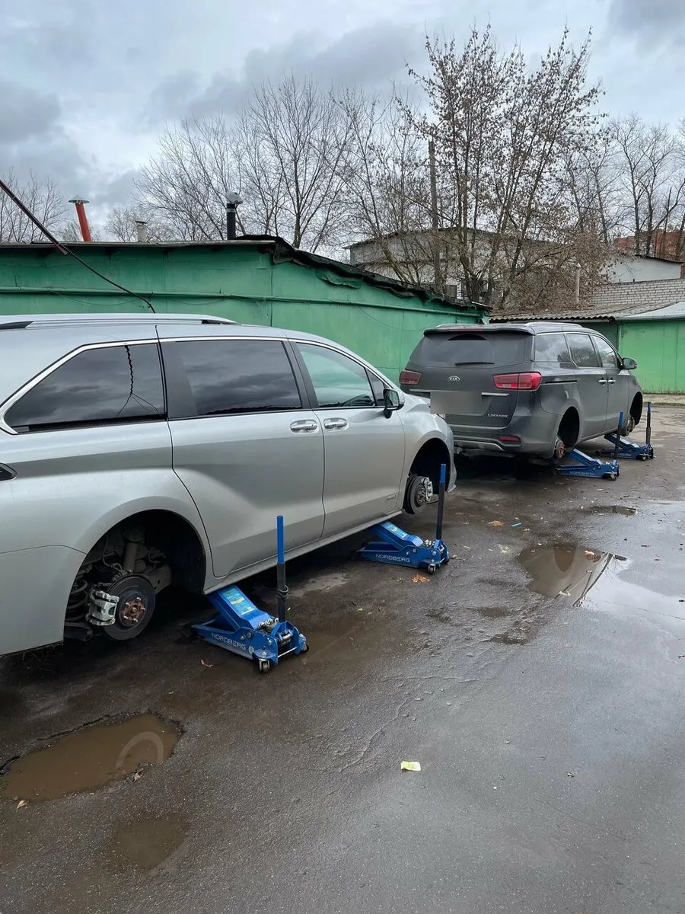
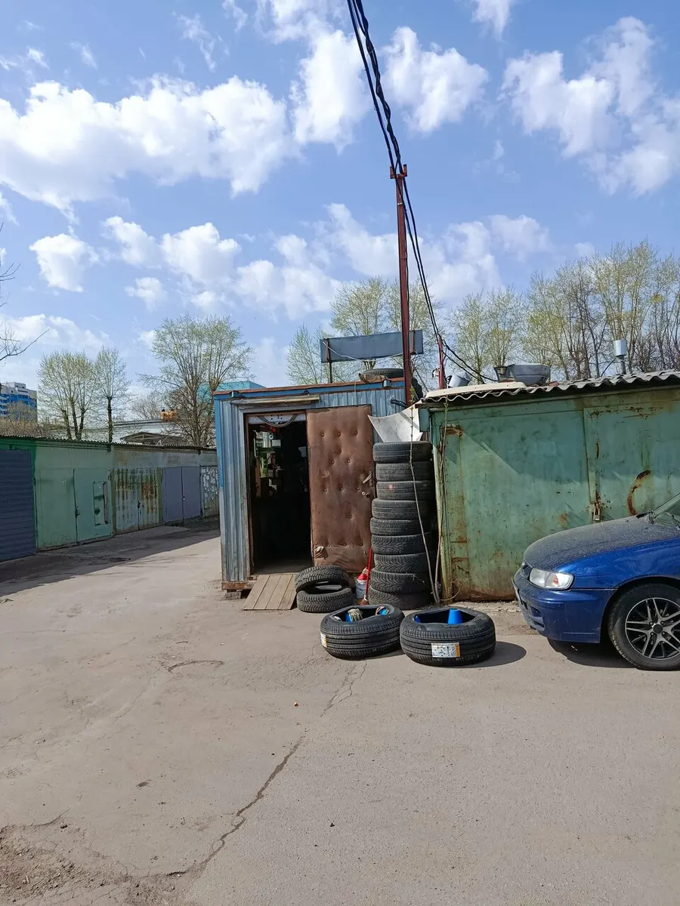
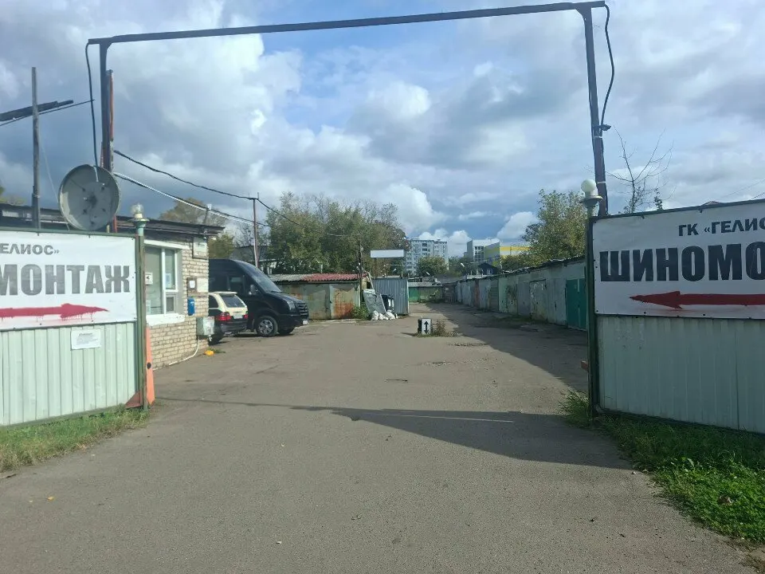

Шиномонтаж · ул. Орджоникидзе, 35Г · Королёв
Шиномонтаж в Королёве, на Орджоникидзе
Переобуем и отбалансируем колёса, сумму назовём до начала работ. От 1000 ₽ за переобувку, постоянным клиентам скидка.
- 4,3 на Яндекс.Картах, 46 отзывов
- Ежедневно 09:00-20:00, звоните перед выездом
- Скидка постоянным клиентам {{условия скидки}}

Цены
С карточки на Яндекс.Картах: переобуть все колёса от 1000 ₽. Остальное уточняем по телефону, итоговую сумму называем до начала работ.
Шиномонтаж
- Переобуть все колёса{{за 4 колеса или за 1, на каком диаметре}}от 1 000 ₽
- Балансировкауточнить
- Грузовой шиномонтажуточнить
- Шины и дискипродажа, подборуточнить
Как проходит визит
- 01
Позвоните или напишите
Скажете размер колёс, договоримся на время. +7 (915) 200-20-22, есть WhatsApp.
- 02
Заезжайте во двор ГК «Гелиос»
Ориентир: две белые вывески «ШИНОМОНТАЖ» со стрелками у въезда на Орджоникидзе, 35Г. {{схема въезда}}
- 03
Мастера делают работу
Снимают колёса, меняют шины, балансируют, затягивают болты динамометрическим ключом. {{мастера}}
- 04
Называем итог до оплаты
Что сделано и сколько стоит. Оплата наличными, картой, переводом, по QR или через СБП. {{перевод без наценки}}



Что вы получите
Сумма до начала работ
Называем цену до того, как мастер возьмётся за колесо. Лишнее не навязываем, дополнительные услуги на выбор.
Скидка постоянным клиентам
Об этом пишут в отзывах. Клиенты ездят годами, один пишет: «последние лет пять только к ним». {{условия скидки}}
Всё в одном месте
Шиномонтаж, балансировка, грузовой шиномонтаж, шины и диски. Цены на них: уточнить по телефону.
Гарантия на работу
Гарантия указана на карточке. {{срок и на что}}
Отзывы с Яндекс.Карт
«Главное не как выглядит, а какие руки! А руки у ребят в этом шиномонтаже растут из плечей! Делают всё хорошо и постоянным клиентам скидки!»
Ivan Malyshev · 19 августа 2025
«Очень хороший шиномонтаж рядом с моим домом. Грамотные работники, например после затяжки болты протягивают динамометрическим ключом, так далеко не везде делают, хотя это обязательная процедура. Ну и цены приемлемые, постоянным клиентам скидки. В общем последние лет пять я только к ним езжу»
Djoshua · 30 ноября 2023
«Шиномонтаж в гаражах. Все четко, без навязывания услуг. Утром выходного работали, до этого 3 шиномонтажа были закрыты.»
Роман Ковбасюк · 19 апреля 2025
Отзывы с карточки на Яндекс.Картах, без правок.
Частые вопросы
Где вы находитесь?
Королёв, улица Орджоникидзе, 35Г, во дворе гаражного кооператива «Гелиос». Заезжайте по стрелкам на вывесках «ШИНОМОНТАЖ». Ближайшая остановка «Улица Дзержинского», 440 м.
Когда работаете?
По карточке на Яндекс.Картах: каждый день с 9:00 до 20:00. Лучше позвонить перед выездом. {{работаете ли зимой и в праздники}}
Сколько стоит?
Переобуть все колёса от 1000 ₽. Точную сумму называем до работы, по размеру колёс и услугам. Остальные цены: уточнить по телефону.
Нужна ли запись?
Напишите или позвоните, договоримся на удобное время. {{запись и живая очередь}}
Как оплатить?
Наличными, картой, переводом, по QR-коду или через СБП. {{условия по переводу}}
Позвоните перед выездом, договоримся на время
- Адрес
- улица Орджоникидзе, 35Г, Королёв
- Часы
- Ежедневно 09:00-20:00
- Телефон
- +7 (915) 200-20-22